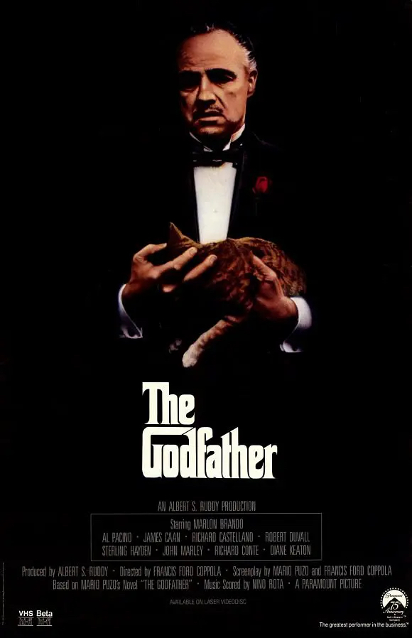
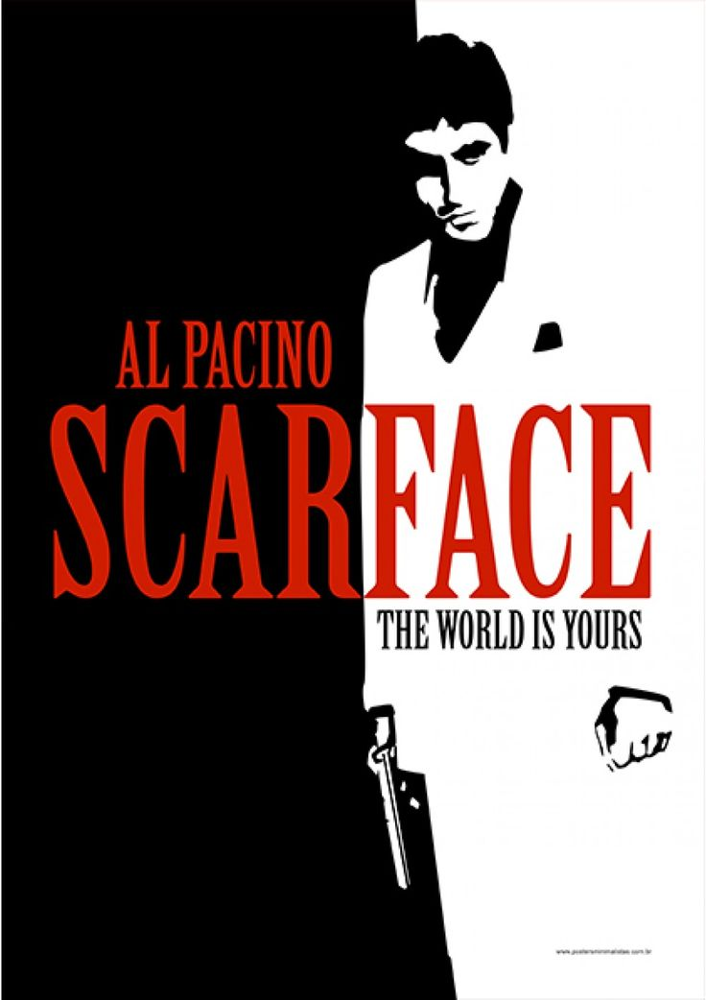

Фильмы с Аль Пачино

Крёстный отец
«Крёстный отец» (1972) — криминальная драма Фрэнсиса Форда Копполы о нью-йоркском мафиозном клане во главе с доном Вито Корлеоне. Фильм охватывает период 1945–1955 годов.
Смотреть на Кинопоиск

Лицо со шрамом
«Лицо со шрамом» (Scarface, 1983) — криминальная драма о взлёте и падении амбициозного преступного авторитета Тони Монтаны.
Смотреть на Кинопоиск
Запах женщины
Наступил День благодарения, и отставной полковник разведки Фрэнк Слэйд (Аль Пачино)решает справить праздник, «побаловав» себя поездкой в Нью-Йорк.
Смотреть на КинопоискКраткая информация об актёре
Где родился: Нью-Йорк, США
Где учился: Актёрская школа при театре.
Аль Пачино долгое время оставался уединённым в личной жизни и несколько раз был в отношениях.